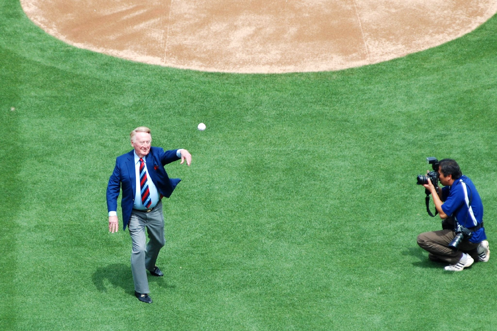

Bio
Rob is a photographer based in Los Angeles. His specialties center around the LA Dodgers. Rob has photographed a variety of timeless moments over the past decade--from rookie debuts to World Series championships. Rob's practice is dedicated to Vin--to spreading the love of the game through picture.
An innovator in the arena of sports photography, Rob's work has been featured in Sports Illustrated, ESPN, Bleacher Report, Fox Sports, and more. His love for baseball and the LA Dodgers shines in every corner of his portraits.
In his free time, Rob enjoys hanging with his wife, 2 kids, and puppy.